AI STUDIO
AI Studio Experiments
A collection of experimental visual concepts designed using artificial intelligence as a tool for ideation, storytelling, creativity and future thinking.
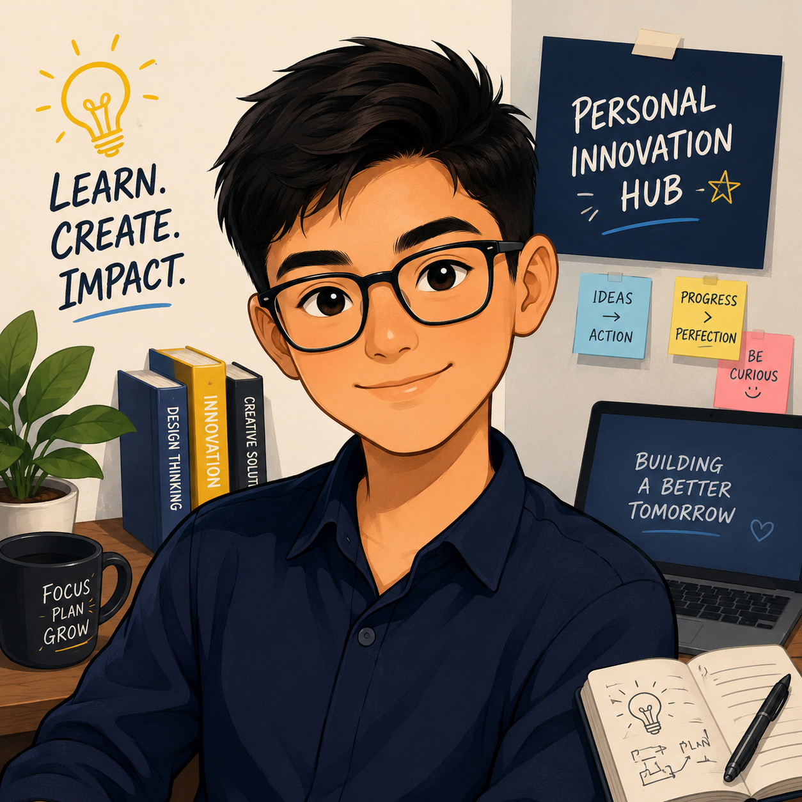
PERSONAL CONCEPT🪐 Me driving innovation, change and transformation. Learning to become more creative.
 LIFE PERSPECTIVE
LIFE PERSPECTIVE
Watching the sunset while navigating life and trying to build something meaningful.
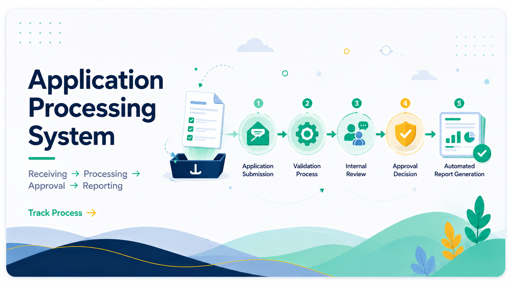
ENTERPRISE SYSTEM DESIGNApplication Processing System — redesigning internal submission and approval workflow architecture.
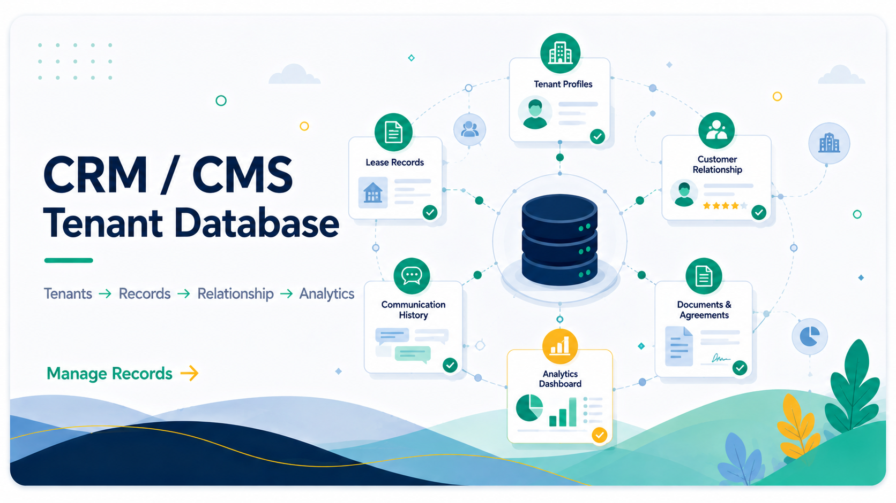
DIGITAL TRANSFORMATIONCMS / CRM Platform — centralized customer management system improving service coordination.
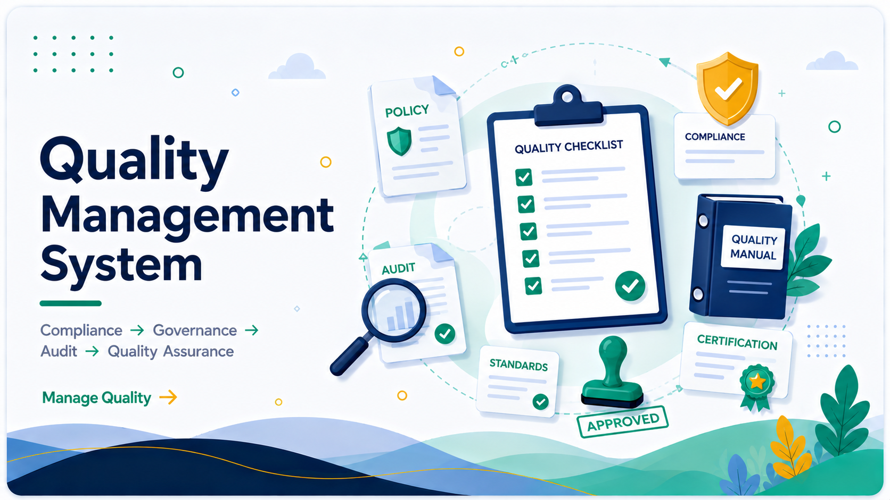
GOVERNANCE SYSTEMSQMS Documentation System — improving document governance, compliance and quality control systems.
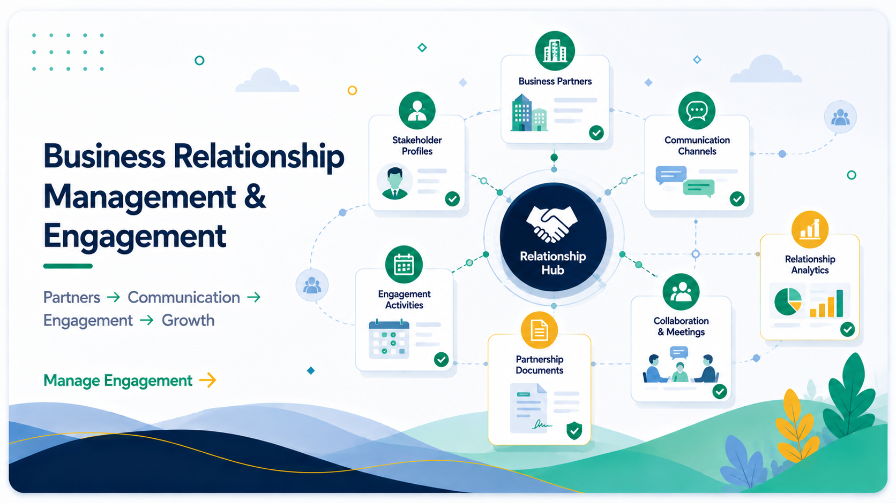
WORKFLOW AUTOMATIONSite Visit Engagement Form — digital field reporting workflow reducing manual documentation processes.
 HISTORY OF BRUNEI
HISTORY OF BRUNEI
Every future starts with understanding and remembering the past.
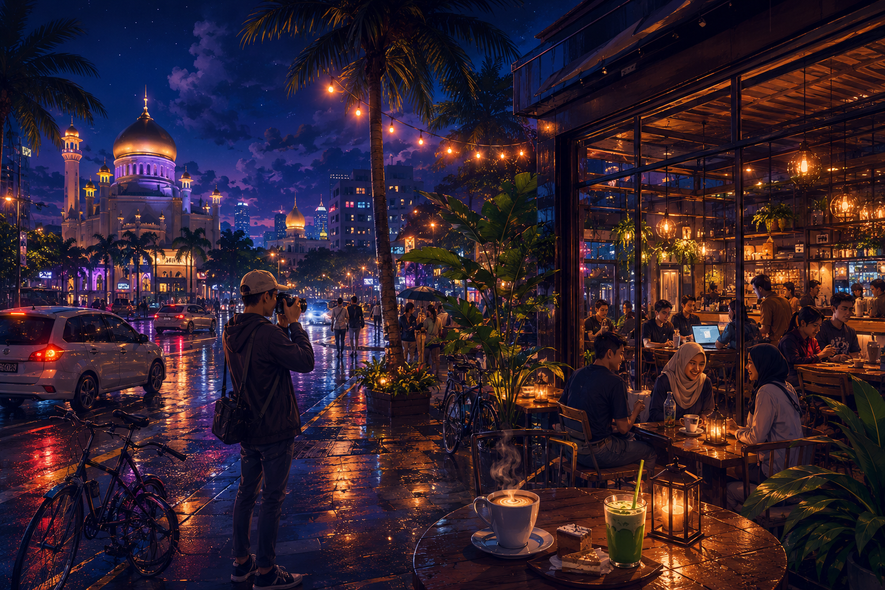
FUTURE BRUNEI LOFI🌃 Creativity tends to work overtime when the world becomes quiet.
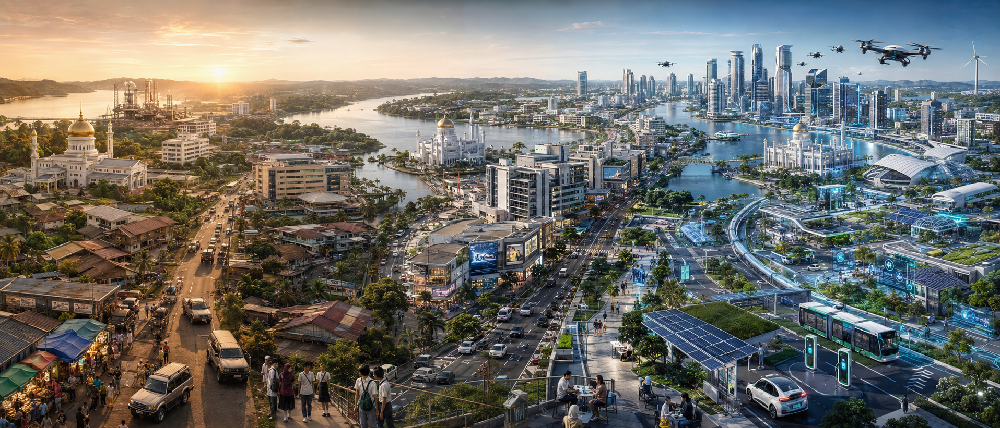
FUTURE BRUNEIImagining how smarter systems can shape tomorrow’s society.
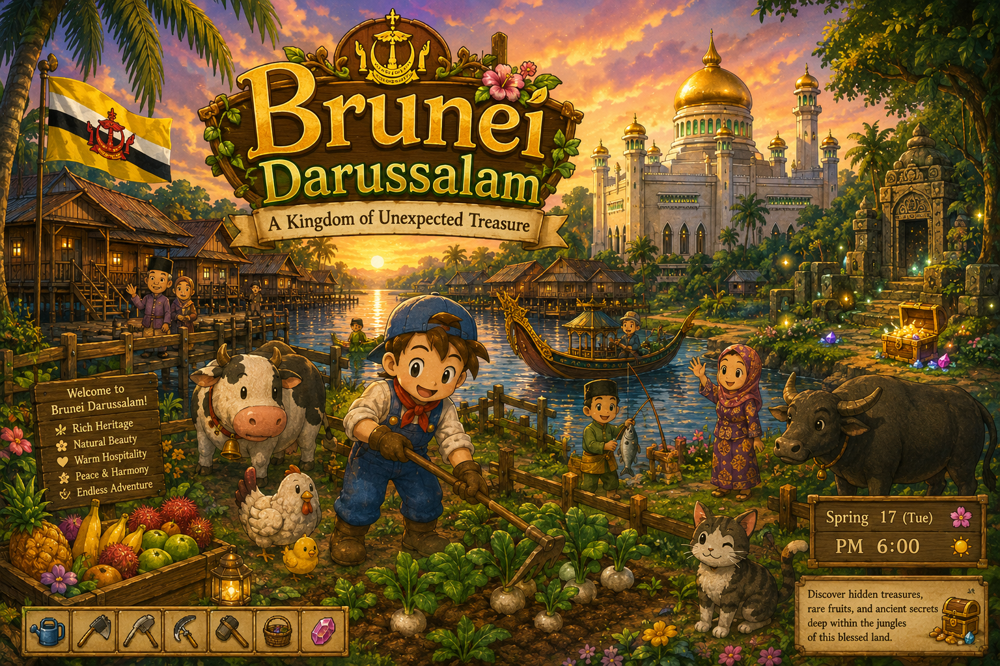
GAME DEVELOPMENT IDEAImagine building a Brunei inspired farming simulator similar to Harvest Moon.
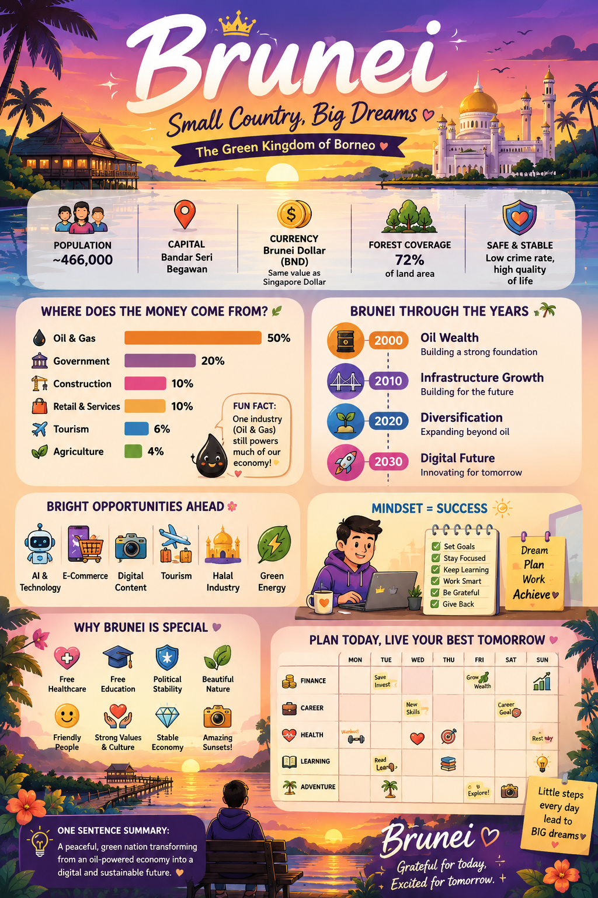
BRUNEI TODAYStrategy makes imagination useful. Data helps transform decisions into action.
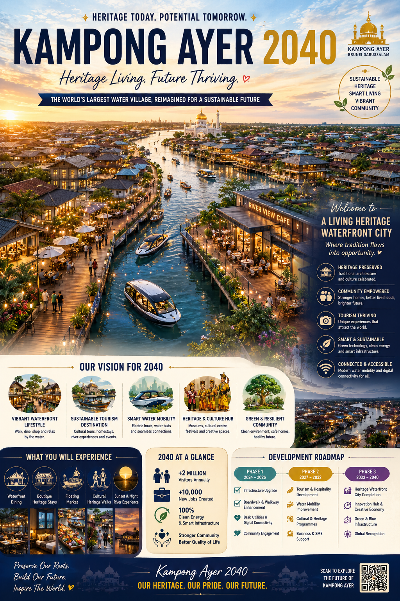
KAMPONG AYER 2040🔮 Preserving heritage while designing the future of Brunei tourism and culture.
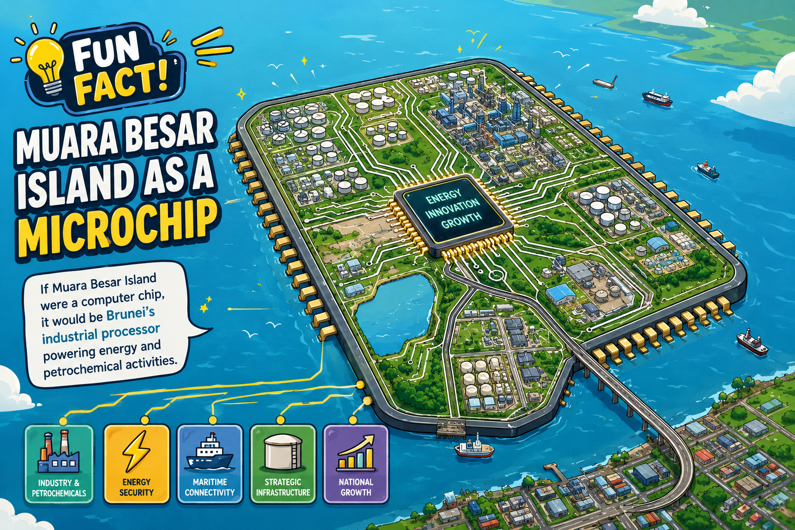
FIRST AI EXPERIMENTThe very first AI image I experimented with during early exploration.
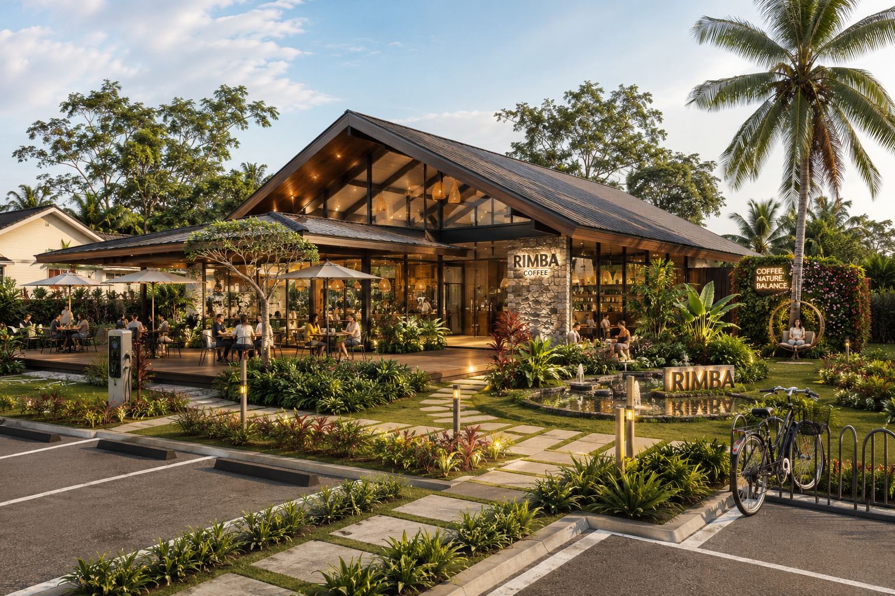
BUSINESS CONCEPTA future small café business concept designed around my home environment.